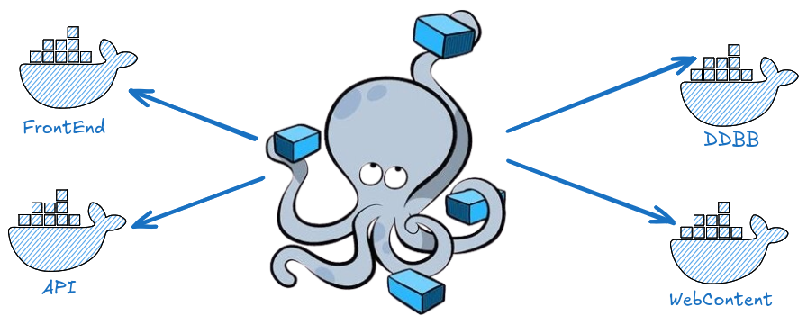
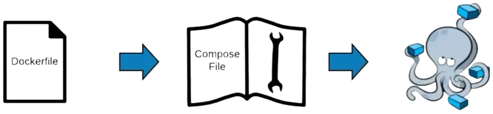

Fundamentos y usos prácticos de Docker
Clase 6 : Docker compose
Temas de clase 6:
Introducción a docker compose
Introducción a docker compose
Docker compose
Docker Compose es una herramienta que permite definir y gestionar contenedores. Es muy utilizado en aplicaciones multicontenedor.
Docker Compose utiliza un archivo YAML que define los servicios que componen la aplicación, sus redes, volúmenes, y otras configuraciones de manera sencilla y eficiente. Y luego con un solo comando podremos iniciar todos los servicios.
Docker Compose se compone por servicios que no son mas que contenedores. En las versiones recientes de Docker, se incluye Compose V2.
¿Por qué usar Docker Compose?
- Simplificación de la gestión: Docker Compose facilita la ejecución de aplicaciones que requieren múltiples contenedores. Sin Compose, tendrías que iniciar cada contenedor manualmente con comandos
docker run , lo que puede ser complejo y propenso a errores. - Configuración declarativa: Toda la configuración de la aplicación, incluidos los servicios, redes y volúmenes, se puede describir en uno o más archivos YAML. Esto hace que la aplicación sea fácilmente replicable y portátil.
- Fácil interpretación de relaciones: Simplemente analizando el archivo YAML podemos tener una noción de como se organizan los contenedores y la relación entre ellos.
- Amplia comunidad y soporte: Docker Compose, se apoya en una gran comunidad muy activa donde se proveen diversos recursos, tutoriales e instructivos.
¿Cómo funciona Docker Compose?
Docker Compose se basa en la definición de los contenedores en un archivo YAML (compose.yaml). Este archivo describe cada servicio necesario, las imágenes que se usarán, las redes para la comunicación interna, los volúmenes para la persistencia de datos, y otras configuraciones específicas.
Componentes clave de Docker compose:
- Servicios (Services): Representan a cada contenedor que forma parte de la aplicación. Por ejemplo, un servicio web puede estar basado en una imagen de Nginx, y otro servicio de base de datos en MySQL.
- Redes (Networks): Facilitan la comunicación entre los servicios definidos, permitiendo que los contenedores se comuniquen entre sí por nombre de servicio.
- Volúmenes (Volumes): Proveen persistencia de datos, permitiendo que los datos de los contenedores persistan aunque estos sean eliminados.
¿QUÉ ES UN SERVICIO?
Un servicio es la definición de la configuración que se aplica a cada contenedor que se inicia para ese servicio. Cada servicio se ejecuta en su propio contenedor, pero todos están definidos y orquestados desde un único archivo compose. En un archivo compose pueden definirse varios servicios.
En un servicio definimos todo lo que podemos hacer con docker run pero de una manera mas visual.
definición de servicio
service:Especifica el nombre del servicio, un servicio es un contenedor. Para cada servicio, podemos especificar, entre otras configuraciones:image:Especifica qué imagen Docker se va a utilizar para crear el contenedor. Puede ser una imagen local o descargada de Docker Hub.build:Especifica la ruta donde está el archivoDockerfilepara armar la imágen. Por lo general se usa una de esas instrucciones (image o buid).ports:Mapea puertos del contenedor a puertos del host, permitiendo el acceso externo al contenedor desde el sistema anfitrión.P_HOST:P_CONTAINER
expose:Indica los puertos abiertos dentro del contenedor sin hacerlos accesibles fuera del host. Serán accesibles desde la misma red interna.environment:Permite pasar variables de entorno al contenedor.restartDefine la política de reinicio del contenedor en caso de fallo o salida. Puede tener valores como:no: No reiniciaralways: Reinicia siempreon-failure: reiniciar si solo fallaunless-stopped: Reiniciar a menos que el contenedor sea detenido manualmente.
Archivo compose
El fomato YAML usa la sangría o identación para su estructura, por eso es importante que seamos consistentes con dicha identación. Es decir, si usamos espacios o tabulación.
En Docker compose, el archivo compose puede tener alguno de los siguientes nombres.
Nombres estándares de compose
compose.yaml/ymldocker-compose.yaml/yml
Si el archivo compose tiene otro nombre, hay que indicarselo a la CLI con --file
Compose CLI
La CLI de Docker nos ayuda a interactuar con compose mediante el comando docker compose.
Comandos básicos:
docker compose up: Inicia todos los servicios definidos en el archivo compose.docker compose down: Detiene y elimina los servicios que están corriendo según el archivo compose.docker compose logs: Nos muestra los ouputs de los contenedores. Útil para hacer debug.docker compose ps: Lista los servicios junto a su estado actual.
Docker docs: Compose CLI commands
Iniciando nuestro primer compose
Unas de las mejores caracteristicas de docker y compose, es que se pueden deployar aplicaciones rápidamente. Empezaremos por un servidor web Nginx. Copiamos el siguiente texto a un archivo llamado compose.yaml en una carpeta nueva.
services:
web:
image: nginx:alpine-slim
ports:
- "80:80"
docker compose up
Abrimos http://localhost y analizamos. Salimos con Control+C.
Por defecto, Compose crea una nueva red tipo bridge derivada de su project name. Si no se especifica, el project-name se deriva de la carpeta que contiene el archivo compose.
Web estática con compose
Vamos a modificar el compose para que no solo muestre la página de bienvenida de Nginx, sino para que sirva una web propia. Creamos una carpeta nueva llamada web.
Luego, descargamos el siguiente archivo funny-eyes. Descomprimimos el ZIP y renombramos la carpeta funny-eyes-master a html.
web/
├─ html/
│ ├─ js/
│ ├─ css/
│ ├─ index.html
├─ compose.yaml
Web estática con compose
Una vez que tengamos la estructura de directorios indicados, creamos un archivo compose.yaml con el siguiente contenido:
services:
web:
image: nginx:alpine-slim
ports:
- "80:80"
volumes:
- ./html:/usr/share/nginx/html:ro # bind mount (read only)
docker compose up -d
Detener docker compose
Cuando ejecutamos el compose en modo daemon (-d) para detener podemos hacer lo siguiente:
docker compose stop # Detiene los contenedores
docker compose down # Detiene y elimina contenedores y redes
docker stop [CONTAINER_ID | NAME] # Usando docker CLI (sin compose)
Ambito de compose
Es importante remarcar que el ámbito del compose es por directorio/carpeta.
Es decir, si ejecutamos un comando docker compose la CLI buscará un archivo compose.yml o docker-compose.yml dentro del directorio actual. Si no lo encuentra, buscará en el directorio de mas arriba así hasta el directorio raíz, si finalmente no lo encuentra dará un mensaje no configuration file provided: not found
Podremos tener tantos archivos composes como queramos pero siempre teniendo en cuenta los directorios. Podremos también en el mismo directorio tener varios composes, pero tendremos que hacer explícito (con -f o --file) a qué archivo nos estamos refiriendo.
docker compose --file otro-compose.yml up -d
Consultas
Docker compose
Composes multi-contenedor
Composes multi-contenedor
Gestionar diversos conenedores utilizando la Docker CLI requiere de varios pasos que tienen que ejecutarse uno tras otro y es propenso a errores.
Una de las cualidades de Docker Compose es la fácil gestión de aplicaciones multi-contenedor. Muchas veces las aplicaciones se componen de varios contenedores. Naturalmente, esos contenedores deberán poder comunicarse entre sí.

Composes multi-contenedor
Ejemplo básico de un archivo compose.yaml multicontainer. Simplemente declaramos otro servicio.
version: '3' # Obsoleta en Compose V2
services:
web: # Nombre del servicio
image: nginx:latest
ports: # Publish ports
- "80:80"
database: # Nombre del servicio
image: mysql:5.7
environment: # Variables de entorno
MYSQL_ROOT_PASSWORD: example
En este ejemplo, se definen dos servicios: web, que usa la imagen de Nginx, y database, que utiliza MySQL. Con el comando docker compose up se iniciarán automáticamente ambos contenedores.
Composes multi-contenedor
Vamos a comprobar que es muy sencillo tener aplicaciones mas complejas deployadas en segundos. En este ejemplo levantaremos un Wordpress.
WordPress es un sistema de gestión de contenido (CMS) de código abierto que permite crear y administrar sitios web y blogs de manera fácil, sin necesidad de saber programar. Es altamente personalizable mediante temas y plugins, lo que lo hace ideal para sitios web de todo tipo, desde blogs personales hasta tiendas en línea.
Para eso descargaremos el compose-wp.yaml
Luego nos ubicamos en una carpeta nueva y ejecutamos:
docker compose --file compose-wp.yaml up -d
Analicemos el archivo compose.
Consultas
Compose + Dockerfile
Construyendo la imágen y correrla
Compose + Dockerfile
Docker Compose NO reemplaza Dockerfile. Ya que tienen propósitos diferentes: Mientras que Dockerfile nos ayuda a personalizar nuestras imágenes, Compose es una herramienta para definir la relación entre cada servicio (contenedores) del arhivo Compose.
Archivo compose + build
Para indicar que nuestra imágen se construye a partir de un Dockerfile, la instrucción image se reemplaza por build.
services:
app:
build: . # Indica que el Dockerfile está en el mismo directorio
ports:
- "8080:8080"
Siguiendo el ejemplo anterior, se indica que para buildear la imágen se usará un archivo Dockerfile que se encuentra en el mismo directorio que el archivo compose.
Archivo compose + build
Dentro de la directiva build podemos especificar mas contexto sobre el Dockerfile.
Contexto:
- Especificar el contexto de construcción: Define la ubicación de los archivos que Docker necesita para construir la imagen (normalmente, el directorio que contiene el Dockerfile).
- Dockerfile personalizado: Podemos especificar un Dockerfile diferente si no está en el directorio por defecto o si deseas personalizarlo.
services:
app:
build:
context: ./app
dockerfile: Dockerfile.custom
ports:
- "8080:8080"
Construir imágenes
Para buildear imágenes de Dockerfile ha sido explicado mas en detalle en otra clase. Sin embargo en Docker Compose tenemos dos opciones:
- Buildear la imágen como lo visto antes con
docker build - Encargarle a compose que haga el build
Para la segunda opción simplemente basta con agregar un parámetro mas a docker compose
docker compose --build # Solo buildea las imágenes
docker compose up -d --build # Buildea y ejecuta los servicios